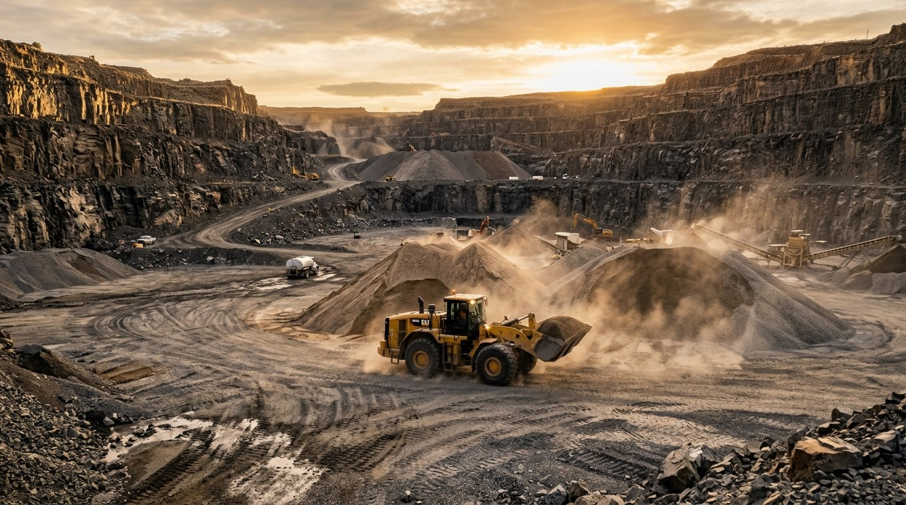
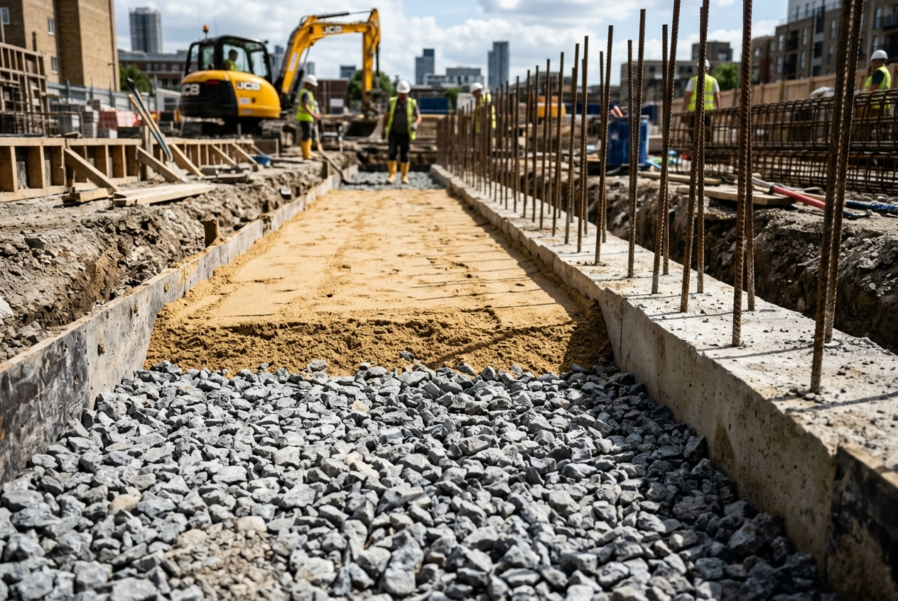
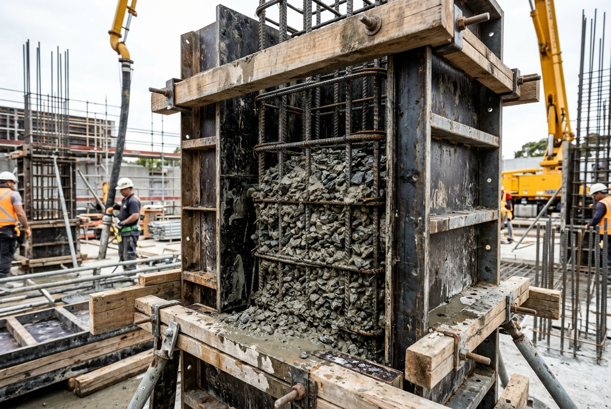
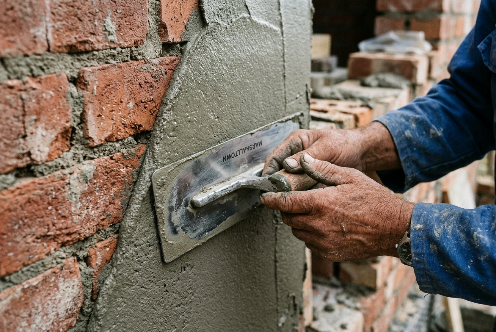
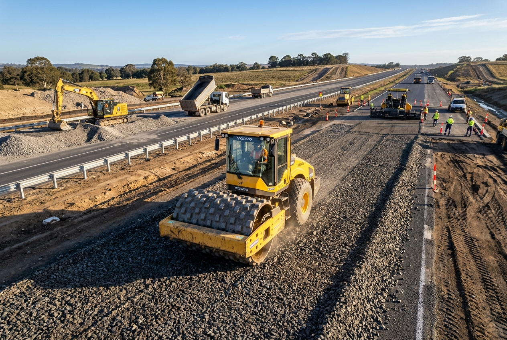
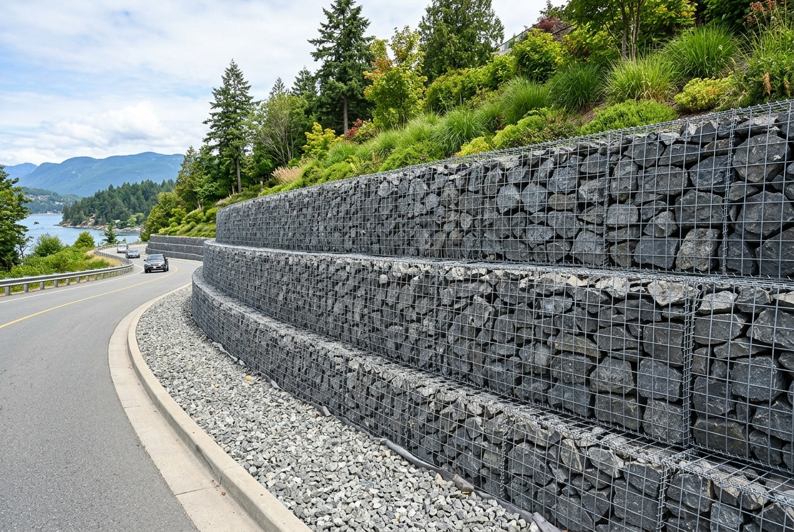

0.15–4.75 mm | Zone II
River Sand
Naturally rounded alluvial quartz sand, double-washed to keep silt content strictly under 2.2% for premium RCC & masonry.

Precision-crushed basalt aggregates, hydro-cyclone washed M-Sand, and natural river sand engineered for high-strength structural concrete, highway sub-bases, and zero-crack plastering.
Every stockpile is crushed from high-density Deccan trap basalt or hydro-classified to strict IS 383 grading curves. Hover over any grade card to inspect grain specifications.
Naturally rounded alluvial quartz sand, double-washed to keep silt content strictly under 2.2% for premium RCC & masonry.
Cubical manufactured granite & basalt sand shaped in Vertical Shaft Impactors for superior M30–M60 concrete workability.
High-compaction non-expansive mineral sand for foundation backfilling, trench bedding, and under-slab plinth leveling.
Air-classified ultra-fine sand free of oversized grit, engineered for silky internal renders and waterproof external facades.
Primary structural coarse aggregate for columns, beams, slabs, and RMC batching plants with Flakiness Index below 12%.
Heavy-duty crushed basalt stone for mass concrete foundations, railway ballast, road soling, and French drain trenches.
Fine angular stone grit blended with 20mm aggregate to eliminate voids in congested rebar cages and precast elements.
Well-graded crushed stone and stone-fines blend achieving 98% Modified Proctor density for highways and industrial floors.
High-binding quarry stone screenings ideal for interlocking paver bedding, fly-ash brick manufacturing, and sub-grade blinding.
Dense, low-absorption fractured basalt rock for gabion retaining baskets, river embankment revetments, and rubble masonry.
Select your construction stage below to view our geotechnical engineer’s recommended aggregate combination, IS code compliance, and compaction ratio.
Prevent differential settlement by pairing 150mm rubble boulders or 40mm coarse aggregate for bottom soling with non-cohesive Filling Sand compacted in 200mm watered lifts.

Eliminates sub-soil voids under raft foundations and heavy industrial floor slabs. Zero expansive clay content.
For M25 to M60 structural concrete, combine 60% 20mm angular basalt with 40% 12mm grit alongside Zone II Washed VSI M-Sand or River Sand to achieve maximum packing density and low water-cement demand.

Supplied with NABL-calibrated sieve analysis certificates for every 100-ton lot delivered to site.
Surface crazing and shrinkage cracks are caused by excess clay/silt fines or oversized 4mm particles. Our Zone III Plastering Sand is hydro-washed and screened at 2.36mm for butter-smooth trowel finish.

Zero on-site screening required—saves up to 18% labor time and eliminates rebounding mortar waste.
Engineered for heavy axle loads in highways, container yards, and VDF warehouse floors. Continuous grading from 53mm down to 75-micron stone dust locks under vibratory roller compaction.

Delivered at Optimum Moisture Content (OMC ±1.5%) in 30-ton tri-axle Hyva tippers for immediate grader spreading.
High-permeability washed 40mm single-size stone and 150–300mm angular basalt boulders provide rapid hydrostatic pressure relief behind retaining walls and along stormwater channels.

Cleanly screened to remove clogging fines, ensuring multi-decade hydraulic conductivity in civil drains.
Every 500-ton production batch undergoes mandatory 4-point physical testing at our on-site NABL-calibrated laboratory before weighbridge clearance.
Automated 8-deck electromagnetic sieve analysis every 2 hours ensures Fineness Modulus stays within ±0.12 tolerance.
Microwave moisture sensors at loading chutes measure surface moisture so your invoice bills for dry net mineral tonnage—never water weight.
Dual-stage hydro-cyclone washing extracts micro-fines below 75 microns, preventing concrete laitance and plaster debonding.
VSI rotor impact shaping eliminates flaky, elongated needles, delivering Aggregate Crushing Value under 15.4% for high-load concrete.
Answers from our Chief Quarry Geologist regarding IS 383 grading zones, M-Sand concrete durability, and silt tolerances.
Yes. Our hydro-cyclone washed VSI M-Sand conforms strictly to IS 383:2016 Zone II grading. Because particles are cubical with rough micro-texture and zero organic impurity, concrete mixes achieve 8% to 12% higher 28-day compressive and flexural strength compared to unwashed river sand.
Zone II sand has a Fineness Modulus of 2.60 to 2.90 with balanced coarse-to-fine particle distribution ideal for structural RCC skeletons. Zone III Plastering Sand is finer (Fineness Modulus 2.10 to 2.40, 100% passing the 2.36mm sieve) so masons achieve dense, crack-free wall renders without on-site sieving.
Single-sized 20mm aggregate leaves inter-particle voids that require extra cement paste to fill. Blending 60% 20mm with 40% 12mm down-grit creates a packed graded curve (IS 383 Table 7), reducing void ratio by 9% and preventing honeycombing around dense reinforcement bars.
Fine sand increases in volume (bulks) by up to 25% at 4–5% moisture content, which penalizes buyers who purchase by volume (CFT/Brass). We weigh all dispatches on NABL-stamped electronic weighbridges in Metric Tons and apply an automated moisture tare deduction so you receive 100% dry mineral mass.
Every bulk dispatch is accompanied by a signed Quarry Material Test Certificate (MTC) documenting sieve gradation, specific gravity, water absorption, silt percentage, and impact/crushing values, along with a government e-Way Bill and Minor Mineral Royalty Transit Pass.